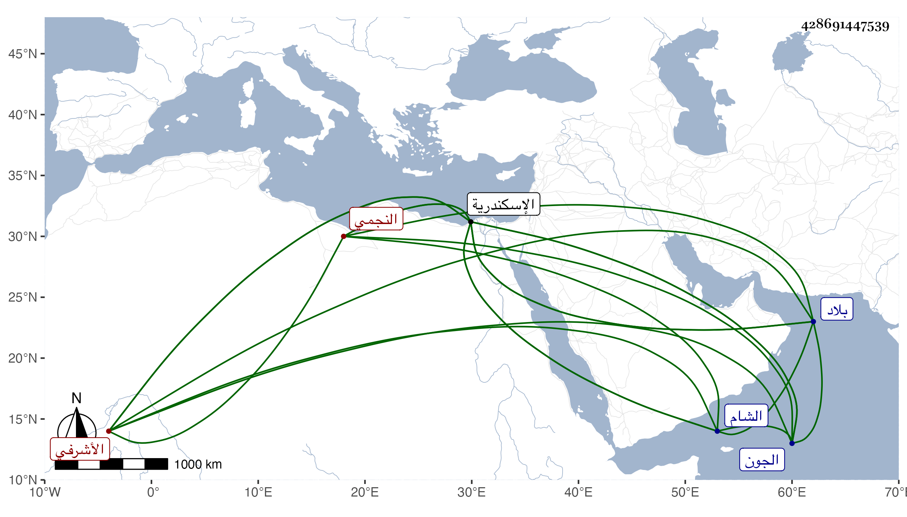

0902Sakhawi.DawLamic.ITO20230111-ara1.EIS1600.428691447539
Biography ID: 428691447539
829
دولات باي النجمي الأشرفي برسباي تنقل حتى صار أحد العشرات ورءوس النوب وسافر وهو كذلك إلى الجون في سنة ست وستين رفيقا لاسنبغا الناصري وغيره ثم عادوا في التي تليها . وتوجه فيها مسفرا مع تمربغا حين وجه لاسكندرية ولم يلبث أن أمر باطلاقه هو ومن كان بقى معه وأن يسجن هذا باسكندرية ويعطي اقطاعه لفارس السيفي دولات باي . ثم أطلق وصار أحد المقدمين بالشام وحاجب الحجاب بها فأغرى النابلسي الوكيل السلطان به بحيث فر إلى بلاد الروم لابن عثمان وحضر معه بعض الوقعات ثم راسله السلطان بما يطيب به خاطره بحيث كان ذلك باعثا له على المجيء ، ووصل في شوال سنة إحدى وثمانين فألبسه خلعة وكذا ألبس ولده ناصر الدين محمد المميز الآتي وأنزله في بيت قانم التاجر بالقرب من سويقة الصاحب وأنعم عليه بنفقة شهرين من دراهم وغنم ودجاج وسكر وعسل وغير ذلك وبالغ في اكرامه ثم ألبسه وهو وولده أيضا بعد ذلك كاملية ووعده بكل خير فلم يلبث أن مات بالطاعون في المحرم سنة اثنتين وثمانين ونزل السلطان فصلى عليه رحمه الله .
